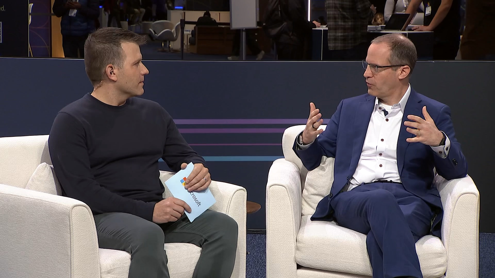
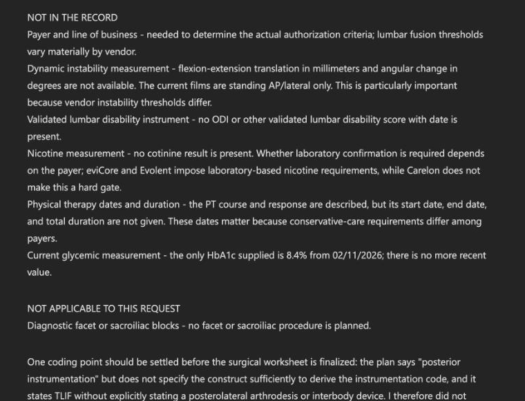
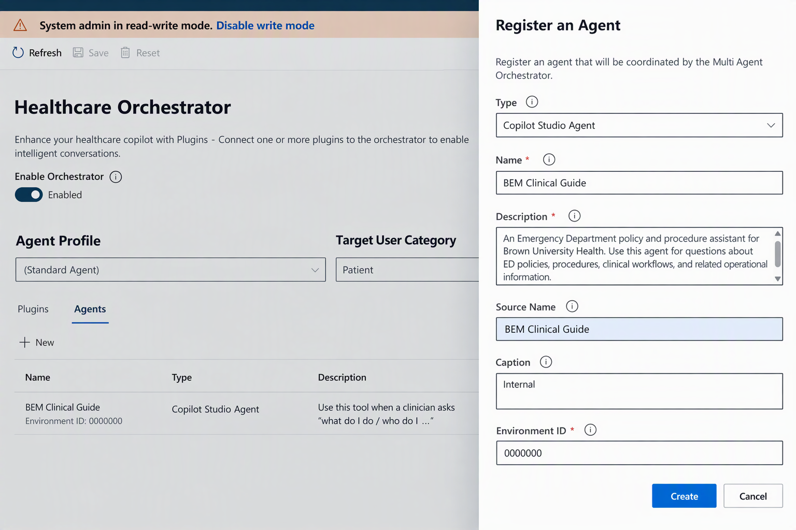
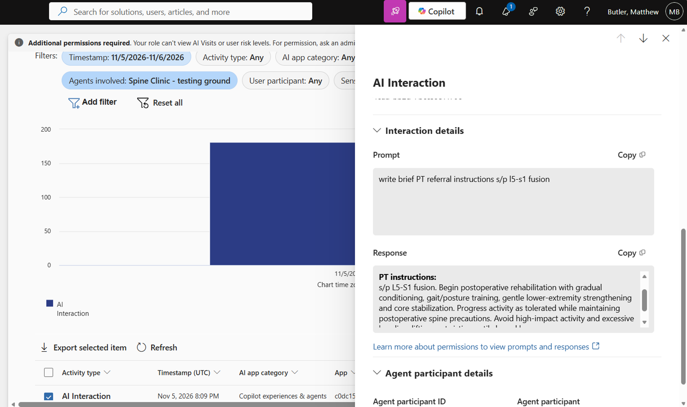

LIVE17 演播室实拍关键帧 · 02:35
Jonathon Dreyer 对话 Adam Landman 博士复盘外科自建案例
Adam Landman 博士在演播室现场详解一线神经外科医生如何自主设计文档、计费与医保预授权协同智能体 [1]。
在 Microsoft Ignite 2026 直播访谈 LIVE17 中，微软全球医疗与生命科学产品市场负责人 Jonathon Dreyer 对话布朗大学健康系统（Brown University Health）首席数字信息官 Adam Landman 博士，复盘这家拥有约 20,000 名员工的学术医疗网络如何将人工智能从环境语音文书录入扩展为嵌入电子病历的临床智能体体系 [1][2]。通过将构建控制权交还最贴近业务摩擦的一线医护人员，团队已在受控沙盒内沉淀超千个智能体原型，并依托 Dragon Copilot、Agent 365 与 Microsoft Purview 打通床旁交付与临床级安全治理 [1][3]。
01 / Frontline Clinician Builders
大型医疗系统的数字化项目长期由管理层自上而下规划，但诊室与病房里最琐碎的日常摩擦往往只有一线医护人员亲身感知 [1]。布朗大学健康系统（Brown University Health）横跨罗德岛州与马萨诸塞州东南部运营八家医院与 200 余处门诊站点，在推进战略级人工智能项目的同时，专门开辟了一条由一线员工自下而上构建解决方案的受控通道 [1][3]。Adam Landman 博士在访谈开篇指出，释放一线创造力的前提并非放任自流，而是先筑牢一套具备隐私边界与治理护栏的统一平台 [1]。
该体系的第一层面向全机构约 20,000 名员工全面铺开 Microsoft Copilot Chat [1]。医院管理层借此确立了明确的数据安全承诺：商业敏感数据与受保护健康信息（Protected Health Information）严格留在受控租户边界内，不会外泄至公共模型训练集 [1]。这一零门槛底座迅速获得约 8,000 名活跃员工日常高频使用，渗透率突破活跃用户基数的三分之一 [1]。当部分科研人员、临床创新者与业务骨干不再满足于单轮问答、主动提出自建专属智能体时，院方顺势启动了基于 Copilot Studio 的精准构建者项目（Builder Program），并为深度算法研究团队配套开放 Microsoft Foundry 科研飞地 [1][3]。
下方导览沙盒完整集成了 LIVE17 演播室访谈的官方点播视频流、高清访谈封面与五段核心议题的逐分钟时间轴，点击上方标签即可切换查阅对应进度与对话原意 [1][2]：
切换医生构建者、神经外科智能体、Dragon Copilot 病历集成、风险分级治理与新聘医师入职五大章节，支持页面内直接加载微软 Medius 点播播放器。
02 / Clinician-Built Surgical Agents
“医生构建者”并非停留在概念验证口号上，而是直接切入了外科手术排期中最耗神的行政瓶颈 [1]。Adam Landman 博士在访谈第 2 分 30 秒详细拆解了一位神经外科医生的真实自建案例：过去每为一名重症患者敲定必需的手术方案，主刀医生都要耗费大量诊后时间拼凑跨科室病史、核对繁杂的手术收费代码，并反复应对商业保险公司的事前授权（Prior Authorization）材料补件 [1]。在接入受控构建环境后，这位神经外科医生（配套临床报告披露为神经外科系 David B. Kurland, MD, PhD）亲手设计了一组环环相扣的临床文档智能体 [1][3]。
智能体通读转诊单、基层首诊记录、疼痛管理随访、物理治疗小结以及核磁共振与 X 光影像报告，结合外科医生的查体结论生成结构化会诊病历；所有规则以纯文本写明，严禁捏造任何病历未载明的事实 [1][3]。
仅依据已确认的手术方案推导对应收费与操作代码；若术式描述尚不足以唯一锁定器械编码（如仅写后路固定但未指明融合器细节），智能体会当场标出待澄清项，上线前 5 个月便将每百台手术的事后编码追问从 43 次压降至 13 次 [1][3]。
自动核查患者具体参保机构与险种的事前授权门槛（如保守治疗起止周期、动态失稳测量值或尼古丁化验要求），赶在申请单发出前揪出病历缺口；主刀医生只需补充确认一次，系统即刻重写病历并生成契合该患者病情的个性化事前授权文书 [1][3]。

Adam Landman 博士在演播室现场详解一线神经外科医生如何自主设计文档、计费与医保预授权协同智能体 [1]。

诚实标出病历未载明的赔付方险种、屈伸位失稳毫米数、理疗起止日期与最新糖化血红蛋白（8.4%），杜绝盲目递交遭拒付 [3]。
03 / Point-of-Care EHR Delivery
再精巧的临床智能体，一旦要求接诊医生最小化病历系统、另开网页登录问答框，实际使用率就会断崖式下跌 [1]。围绕“智能体究竟呈现在哪个终端入口”这一工程命题，Brown University Health 按岗位工作流重心实施了严格的双轨分发策略 [1]：对于常驻办公桌工作站的行政、财务与运营等知识型员工，直接通过原生 Microsoft Copilot 应用、网页端或 Microsoft Teams 调用智能体最为顺手；但对于全天泡在**电子健康记录（Electronic Health Record，如 Epic）**里的临床医护而言，电子病历窗口才是唯一自然的工作界面 [1][3]。
打通这最后一公里的枢纽正是 Dragon Copilot [1]。在诊室接诊场景中，临床医生原本就依赖 Dragon Copilot 完成环境语音监听与病历自动生成（Ambient Documentation），大幅缩短敲字录入耗时 [1]。更重要的是，Dragon Copilot 在电子病历旁侧提供了一个直达床旁（Point of Care）的统一交互窗口——医院在 Copilot Studio 中自建的各类专科指南与流程辅助智能体（如罗德岛医院急诊科用于查询出院规范与院内手册的 BEM Clinical Guide），只需在医疗编排器中开启多智能体协同并完成注册，就能直接嵌入同一个床旁窗口供医生用自然语言随问随调 [1][3]。

开启 Healthcare Orchestrator 后填入智能体名称、职责描述与环境标识，急诊医护在床旁病历流中询问院内处置规范时即可自动路由响应 [1][3]。
04 / Risk-Based Governance & Observability
在高度敏感的患者医疗护理领域开放员工自建智能体，如何守住临床安全底线？Adam Landman 博士给出了一个反直觉却经受住实战检验的判断：许多人把治理当作层层设卡说“不”的路障，但在医疗深水区，设计得当的治理恰恰是让机构跑得更快的加速器 [1]。截至 2026 年 8 月下旬，Brown 内部已有 189 名员工构建者累计探索并盘点在册 1,045 个智能体（其中约 55% 聚焦临床与护理工作流），之所以能放手让一线试错而未失控，核心在于“沙盒先行 + 双向孵化 + 风险分级”三道机制 [1][3]。
所有构建者均从 IT 完全可视可控的 Copilot Studio 沙盒环境起步；人工智能卓越中心（AI Center of Excellence）后台巡检发现高潜力原型时会主动联系作者帮扶扩规模，构建者也可随时向卓越中心申请走出个人沙盒 [1][3]。
治理门禁严格按潜在临床风险差异化设防：凡触及患者临床护理与诊疗决策的智能体一律划为高风险，必须跨越多轮临床验证、极限测试与多级委员会审批方可推广；纯行政低风险场景则走轻量化审阅敏捷放行 [1][3]。
晋升流程强制要求所有智能体完成实名注册，明确记录功能边界与业务责任人（Owner）；运行态联合启用 Agent 365 与 Microsoft Purview，实时采集会话量、异常报错与完整交互审计日志以备合规抽查 [1][3]。

合规审计员可按时间窗与智能体名称（如 Spine Clinic 测试环境，近 30 天累计 160 次会话、0 次异常）调阅术后康复指导等真实交互明细 [1][3]。
05 / Next Horizon: Provider Onboarding & Work IQ
访谈尾声谈及未来路线图时，Adam Landman 博士将技术投入明确收拢至当前美国医疗机构普遍承压的三大生存挑战：严峻的财务收支压力（Financial Pressures）、患者临床就诊可及性受限（Limited Access to Care）以及临床医护高企的职业倦怠（Clinician Burnout） [1]。围绕这三座大山，除了医院专门设立总额 100 万美元的 2027 财年临床人工智能创新基金（从数十份一线申报中精审 12 项并资助急诊社交孤立筛查、神经外科文档与肿瘤免疫不良反应监测 3 个标杆项目），团队当前正全力推进一项兼具运营与临床价值的旗舰工程——新聘临床医师入职自动化（Provider Onboarding） [1][3]。
每当医院新聘任一名临床专科医生，从入职签约、资质核验到最终获准开诊接见预约排队患者，中间横亘着繁琐的跨部门表格填报与往复问询 [1]。通过引入集成智能体自动化简化入职手续并削减重复函询，不仅行政人员与新医生双双减负，更能直接缩短患者苦等专科门诊的时间窗口 [1]。在底层架构选型上，Landman 博士与 Jonathon Dreyer 共同点明了微软全栈整合与 Microsoft IQ（Work IQ） 上下文层的决定性价值：医院能够轻松为智能体划定严密的数据围栏——彻底阻断其访问公网公开信源，仅允许定向检索院方已在 SharePoint 或 Microsoft Teams 上审校沉淀的内部政策手册与临床路径，再一键投送至医护日常工作流前端 [1]。
| 演进层级与业务场景 | 核心平台组件 | 受众规模与知识围栏 | 可验证临床与运营成效 |
|---|---|---|---|
| 全员隐私安全问答底座 | Microsoft Copilot Chat | 覆盖全院约 20,000 名员工；商业敏感与受保护健康信息严格留在租户内 [1] | 约 8,000 名员工日常活跃使用（活跃渗透率超三分之一）[1] |
| 一线临床与业务先锋自建 | Copilot Studio + Microsoft Foundry | 189 名构建者在受控沙盒内原型创新；科研团队使用安全飞地 [1][3] | 累计盘点 1,045 个智能体，约 55% 直接服务临床与护理流程 [3] |
| 神经外科门诊与术前准备 | Copilot Studio / M365 Copilot Agents | 锁死转诊/影像/查体事实与赔付方条款，严禁编造缺失指标 [1][3] | 3 款智能体日均常驻脊柱外科；前 5 个月每百台手术编码追问由 43 降至 13 [3] |
| 诊室床旁环境录入与指南 | Dragon Copilot + Healthcare Orchestrator | 嵌入电子健康记录界面，仅挂载罗德岛医院审校手册禁公网搜索 [1][3] | 消除医生切出病历查制度摩擦，归还医患面对面交流注意力 [1][3] |
| 风险分级治理与入职攻坚 | Agent 365 + Microsoft Purview + Work IQ | 强制责任人登记、高风险诊疗多级验证、仅连 SharePoint/Teams 库 [1][3] | 全量留存审计日志（单测试代理 30 天 160 会话 0 异常）；加速新医师开诊 [1][3] |
06 / References: Official Primary Sources & Companion Sessions
bc3fe25c-bdfe-4458-ae57-8f637c5cb128）